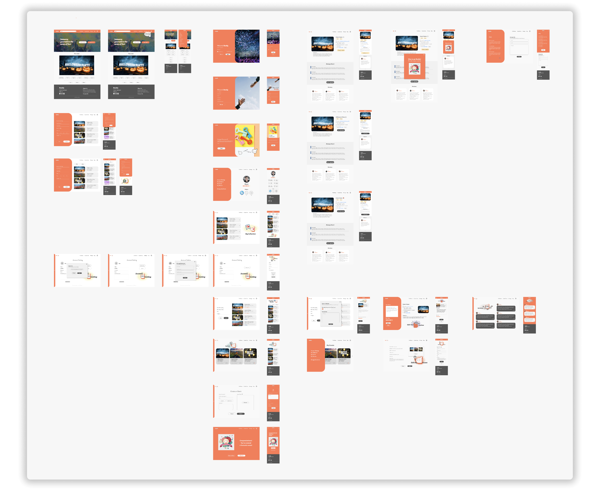
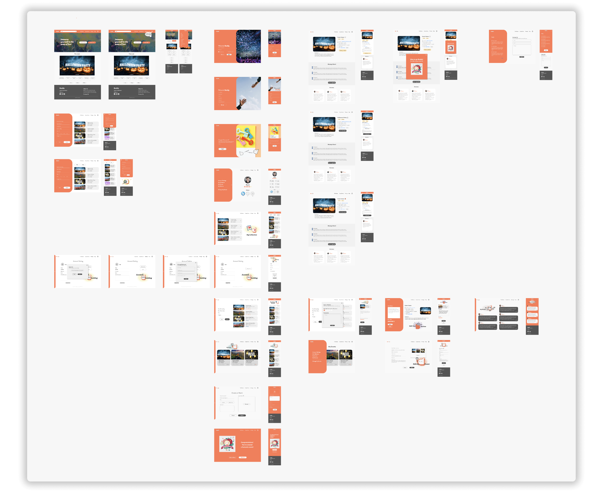

Buddy
Desktop & Mobile App
Buddy is a comprehensive social engagement application designed to foster community interaction and reduce feelings of isolation in new environments. The project aimed to bridge the gap in the market by developing an easy-to-use platform that would help newcomers in a city or country to engage with their local community more effectively.
Project Information
⏰ Project duration : 13 Weeks
🦸🏻♀️ My roles: UI/UX Designer & Project Manager
🌟 Team size: 3 Designers & 4 Developers
Problem
The problem at the heart of this project is the sense of isolation and loneliness that many individuals, particularly newcomers in a city or a country, often experience. While many social networking platforms are available, they typically cater to individuals who already have an established social circle. On the other hand, newcomers are often left on their own, struggling to form connections, find social events, or engage in community activities. This lack of social interaction can lead to negative emotional states, including feelings of loneliness, anxiety, and depression.
There is a significant gap in the market for a social engagement application that not only provides newcomers with easy access to local social activities but also promotes interaction, rewards participation, and allows for feedback and ratings for the events attended.
User Goals
As a user, I want to discover local events easily to participate in activities that align with my interests.
As a user, I want a personalized experience where the platform learns from my preferences and interactions so that I can receive customized event recommendations.
As a user, I want to interact with other event participants to build a sense of community and belonging.
As a user, I want the ability to save and organize events I'm interested in, so I can plan my participation effectively.
As a user, I want to provide and read event feedback to make informed decisions and contribute to the community.
As a user, I want an intuitive and user-friendly interface to make finding and joining events seamless.
As a user, I want timely updates about my saved or upcoming events to stay informed and plan accordingly.
Solution
To address these user goals, we have designed the "Buddy".
Discover Local Events: Buddy app includes an advanced search feature that allows users to easily find events in their locality, based on their interests and preferences.
Personalized Experience: Buddy app uses an intelligent algorithm to understand the users' preferences based on their interactions and provides personalized event recommendations.
Social Interaction: Buddy app incorporates a built-in social networking feature, enabling users to interact with other participants and fostering a sense of community.
Save and Organize Events: Buddy app allows users to save, categorize, and manage events they are interested in, providing a personalized calendar and event management system.
Provide and Receive Feedback: Buddy app includes a rating and review feature, where users can share their experiences and feedback about an event. Similarly, users can also read reviews and ratings from other participants.
Reward Participation: The Buddy app has a rewarding system where users earn badges and points for their active participation, incentivizing further engagement.
Ease of Use: Buddy app has been designed with an intuitive and user-friendly interface to make the process of finding, joining, and managing events as simple and seamless as possible.
Stay Informed: Buddy app sends timely notifications and updates about saved or upcoming events, ensuring users are always in the loop.
High Fidelity Wireframes
 

Tools
Within the project, a variety of tools were employed to ensure both design precision and effective communication. Figma served as the primary platform for interface design and prototyping, ensuring a seamless user experience. Illustrator and Photoshop, with their expansive capabilities, were utilized for crafting detailed graphics and refining visual assets. Meanwhile, Slack played a pivotal role in team communication, ensuring real-time collaboration and feedback, and keeping everyone aligned with the project's goals and progress.
Conclusion
The Buddy app project was an opportunity for me to wear multiple hats as a UI/UX Designer and Project Manager. Designing an interface that was visually appealing, intuitive, and user-friendly was a creative and fulfilling challenge. Meanwhile, as a project manager, I learned how to coordinate team activities, manage communication, and ensure we met our project deadlines.
Developing the app encompassed multiple stages, from ideation to completion. As part of the UI/UX design process, I created several UI assets and kits consistently applied throughout the app. As a Project Manager, I honed my team coordination, task allocation, and communication management skills using tools such as Slack and Figma. Balancing time constraints with team capabilities and ensuring the delivery of a high-quality product was a task that was as challenging as it was rewarding. Additionally, I had the opportunity to conduct a competitor analysis, devise a business plan, and strategize on potential future features.
In conclusion, the Buddy app project has significantly contributed to my growth as a UI/UX designer and a Project Manager. I applied my skills in a practical setting and gained hands-on experience in all aspects of product development. The lessons I've learned in strategic planning, user-centred design, and project management are invaluable and will undoubtedly be a strong foundation for my future endeavours. I look forward to leveraging these learnings in my upcoming projects, continuing to create intuitive designs that enhance user interactions and drive user engagement.
My Other Projects
You can access my other projects by clicking on the button below.